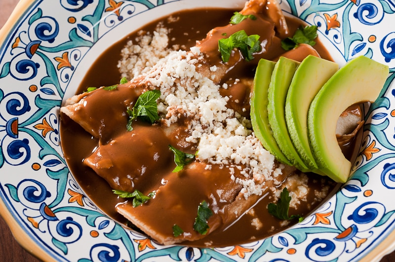
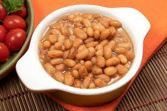
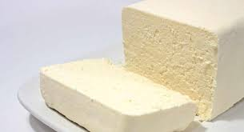
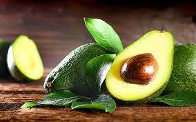
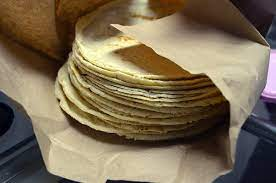
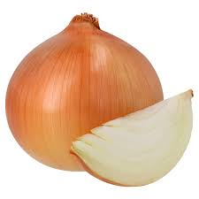
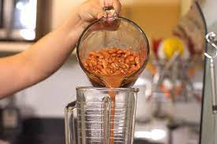
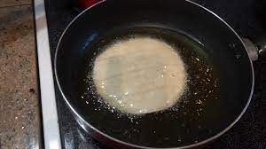
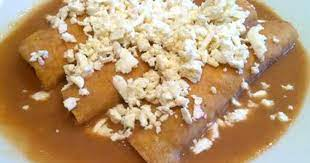

Enfrijoladas

¿A poco no se te antojaron?
1. Lugar de procedencia: México.
2. Historia: Las enfrijoladas son un platillo emblemático de México en el cual convergen dos de los productos más consumidos a nivel nacional: el maíz (de las tortillas) y los frijoles.
3. Datos curiosos: Hay 337 calorías en una porción de Enfrijoladas. Se preparan con rellenos de todo tipo, como queso, jamón, pollo, chorizo, longaniza o carne.
Ingredientes para unas delicias de enflijoladas:
- 2 cucharadas de aceite
- 1 cebolla, mediana rebanada
- 5 dientes de ajo, asados y pelados
- 1/2 tazas de agua
- 3 tazas de frijoles bayos, previamente cocidos, con caldo
- 1/4 tazas de aceite
- 12 tortillas, medianas
- 1 taza de queso fresco, desmoronado
- 1 aguacate, en cubos para decorar
- 250 gramos de queso manchego
- 50 mililitros de crema





Aquí como ayuda extra un bello tutorial
- Calienta una cucharada de aceite en un sartén y agregue la cebolla y fríala hasta que esté acitronada. Licúa la cebolla con los ajos, el agua y los frijoles. Regresa todo al mismo sartén y sofríe la salsa. Sazone con sal y pimienta.
- Caliente un poco de aceite y fría las tortillas unos segundos de cada lado para que se calienten. Escurra las tortillas sobre papel absorbente.

- Ponga un sartén con un poquito de los frijoles y caliente.

- Sumerja una tortilla en la salsa de frijol, rellena de queso y ponlas en el sartén con poco frijol hasta que se derrita el queso.
- Sirva con crema, queso y aguacate.
